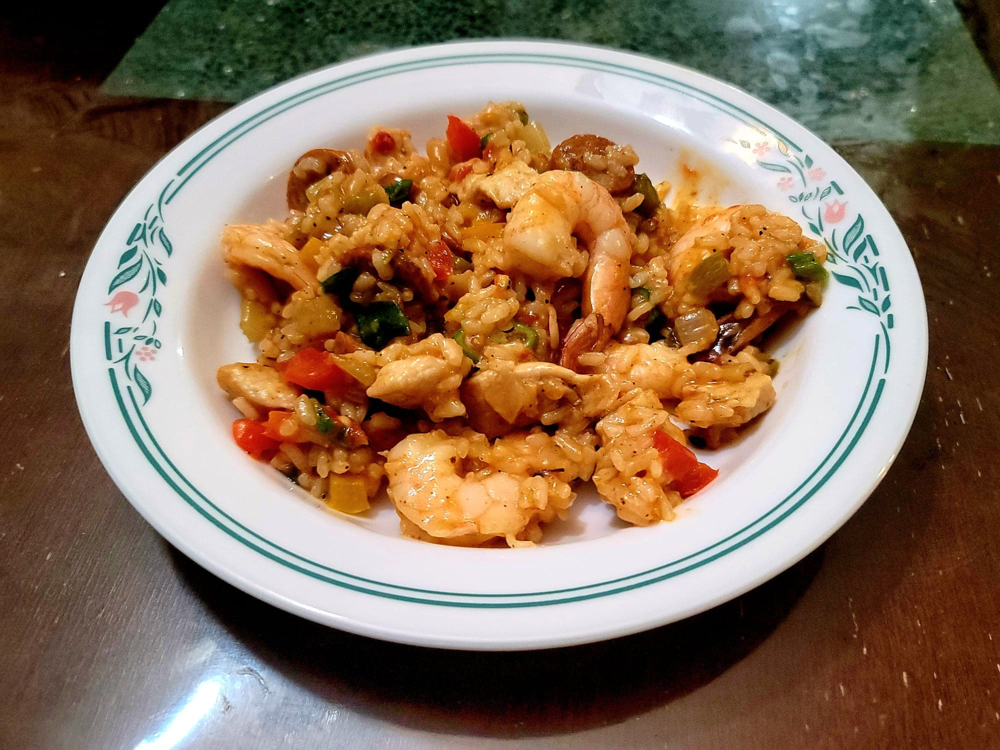

Jambalaya

Ingredients:
- 3 tbsp Canola oil or Bacon grease, divided
- 2 Chicken breast, skinless and boneless, cubed, seasoned with salt and pepper to taste
- 1 lb Andouille sausage, sliced thinly
- 1 large Onion, diced
- 2 large Green bell peppers, or 1 each small green, yellow, and red bell peppers, diced
- 2-3 ribs Celery, diced
- 4 cloves Garlic, minced
- 1 Jalapeño, minced, seeds optional
- 1 14 oz can Crushed tomatoes or Diced tomatoes
- 4 cups Chicken stock
- 1 1/2 cups Uncooked white rice
- 2 tbsp Cajun seasoning, or to taste
- 1 tsp Dried thyme
- 1/4 tsp Cayenne pepper
- 1 Bay leaf
- 1 lb Raw shrimp, peeled, deveined
- 1 cup Okra, thinly sliced
- Salt, to taste
- Black pepper, to taste
- Optional: Scallions or Parsley, chopped
Instructions:
- In a very large, deep, 12" pan, heat 1 tbsp oil over medium-high heat. Add in the chicken and sausages and sauté, stirring occasionally, until the chicken is cooked through and the sausages are browned, about 6-10 minutes. Then remove the chicken and sausage from the pan and reserve.
- Add to the pan the rest of the oil along with the onion, bell peppers, celery, garlic, and jalapeño. Sauté until the onions become translucent, about 7 minutes.
- Add in the tomatoes, chicken stock, rice, cajun seasoning, thyme, cayenne, and bay leaf. Stir to combine and bring to a simmer. Lower the heat to medium-low and cover. Cook for 25-30 minutes or until the rice is cooked, stirring every 5 minutes.
- Add in the shrimp and okra. Cook and stir until the shrimp is completely cooked through. Then add back in the chicken and sausage.
- Taste and add salt, black pepper, and/or cajun seasoning as needed. Then remove from the heat and stir in the parsley or scallions. Serve hot.